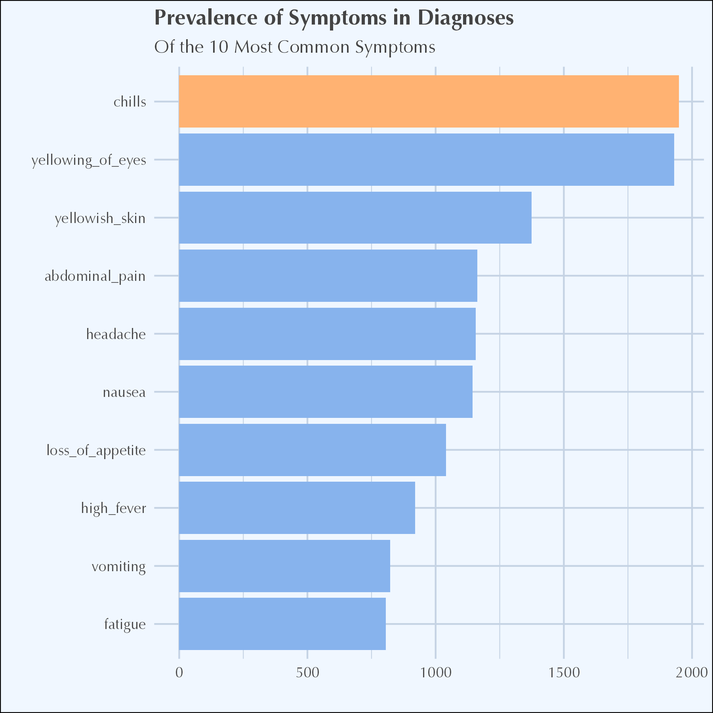
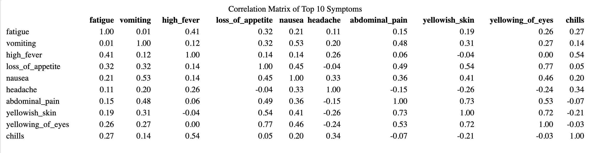

Exploratory Data Analysis
Dataset Overview
The dataset utilized in this study was sourced from Kaggle and licensed from the Massachusetts Institute of Technology (MIT). It contains over one hundred symptoms associated with various diagnoses, providing a comprehensive foundation for evaluating the diagnostic accuracy of generative AI models like ChatGPT. More information is provided in the Methods section.

Summary Statistics
To begin the analysis, summary statistics were calculated for the key variables in the dataset.
- Common Symptoms: Fatigue and vomiting are the most prevalent, each occurring in about 39% of cases, followed by high fever at 28%.
- Rare Symptoms: Nodal skin eruptions and muscle wasting are much less common, present in only 2% of cases.
- Symptom Distribution: Most symptoms, including itching and skin rash, are rarely observed, with the majority of cases showing these symptoms as absent. This highlights the importance of focusing on the more frequent symptoms in the analysis.
Missing Data Analysis
Addressing missing data is crucial in any dataset as it can significantly affect the analysis outcomes. An initial inspection revealed that this synthetic dataset contains no missing data, allowing for more straightforward analysis.
Initial Visualizations
To further explore the dataset, initial visualizations were created to highlight the relationships between key variables. During this exploration, we observed that the dataset was designed with an equal distribution of diagnoses, each having 121 instances, except for “Fungal Infection,” which surprisingly had 122 occurrences.

When analyzing the most frequently occurring symptoms, we found that the top 10 included fatigue, vomiting, high fever, loss of appetite, nausea, headache, abdominal pain, yellowish skin, yellowing of eyes, and chills. Fatigue and vomiting were the most common, with 1,949 and 1,931 occurrences respectively, appearing in nearly half of the records in the dataset.

This analysis prompted the question: where do these symptoms lead in terms of medical families and diagnoses? To explore this, a Sankey diagram was created to visualize the flow. The diagram shows that vomiting is most closely tied to gastrointestinal issues and infections, while fatigue is connected to a broader range of conditions, including metabolic disorders and heart problems. Both symptoms are also linked to neurological and respiratory issues, indicating that they are common in many different illnesses and serve as important diagnostic clues. Specific diseases like hepatitis, jaundice, and diabetes are highlighted, showing how these symptoms play a role in those diagnoses.
A brief note: the medical families were determined by querying ChatGPT, and while informative, may not be 100% accurate in their grouping.
Figure 4: Sankey flow diagram illustrating how the most common symptoms lead to specific diagnoses.
Correlation Analysis
To understand the relationships between symptoms and their associated diagnoses, a correlation matrix was constructed and visualized with a heatmap. This matrix shows the Pearson correlation coefficients between the top 10 most frequent symptoms.


The correlation matrix reveals some clear patterns: yellowing of the eyes and loss of appetite (0.7680), yellowish skin and abdominal pain (0.7336), and yellowish skin and yellowing of the eyes (0.7158) are strongly linked, suggesting these symptoms often occur together in conditions like jaundice. Moderate correlations, such as those between nausea and vomiting (0.5252) and between loss of appetite and abdominal pain (0.4865), are common in gastrointestinal issues. On the other hand, symptoms like headache and abdominal pain (-0.1540) show a weak or negative relationship, indicating they rarely appear together, which could suggest different underlying causes. These correlations are critical for understanding which symptoms might co-occur and potentially lead to specific diagnoses.
Conclusion and Segue to Methods
In summary, the exploratory data analysis has provided valuable insights into the most common symptoms and their relationships with various diagnoses. The analysis highlighted key patterns in symptom occurrence, including strong correlations among symptoms commonly associated with specific conditions like jaundice and gastrointestinal disorders. Additionally, the visualizations offered a clear view of how symptoms like fatigue and vomiting are distributed across different medical categories.
These findings underscore the importance of a detailed and structured approach in evaluating the diagnostic accuracy of generative AI models. To build on this exploratory analysis, we now turn to the methodology, where we will outline the steps taken to rigorously assess the performance of these models, including data preprocessing, model selection, and evaluation metrics. This systematic approach will ensure that the insights derived from the data are translated into meaningful diagnostic accuracy assessments.